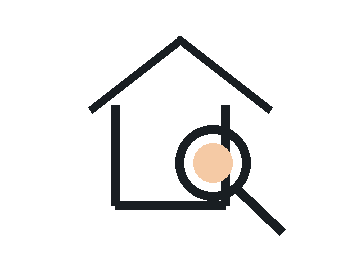
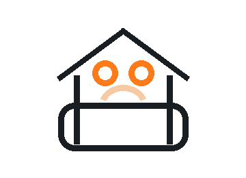

#窗框滲水
窗框邊緣水痕與矽利康收邊不良
若交屋前未確認，入住後可能造成牆面發霉、油漆剝落與後續責任爭議。
DEFECT CASES
這裡可以放日後驗屋現場拍到的實際照片，搭配缺失原因、可能影響與建議修繕方向，讓屋主在預約前就能理解驗屋價值。

若交屋前未確認，入住後可能造成牆面發霉、油漆剝落與後續責任爭議。
常見於浴室、陽台與工作區，可能造成積水、異味或排水速度過慢。

空鼓範圍若擴大，可能影響磁磚壽命，也會讓修繕責任更難判定。
HOW TO READ
建議放現場全景與近景，讓建商能快速找到缺失位置。
用一般屋主看得懂的文字說明問題，而不是只有工程術語。
說明如果不修，可能造成漏水、用電風險、異味或後續維修費。
保留初驗與複驗狀態，日後回看時能清楚知道是否已改善。
FAQ